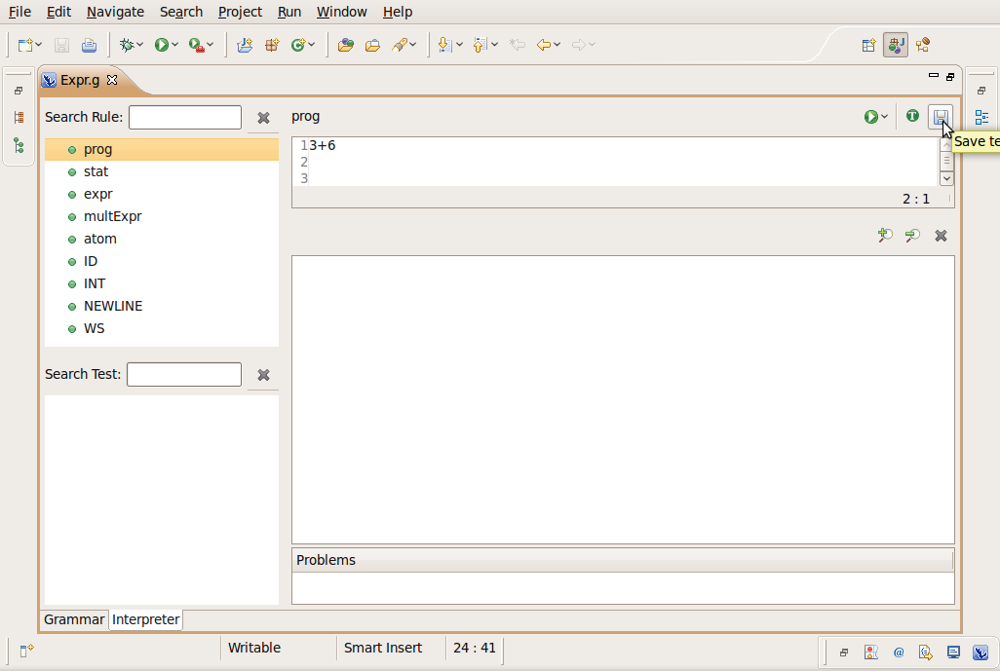
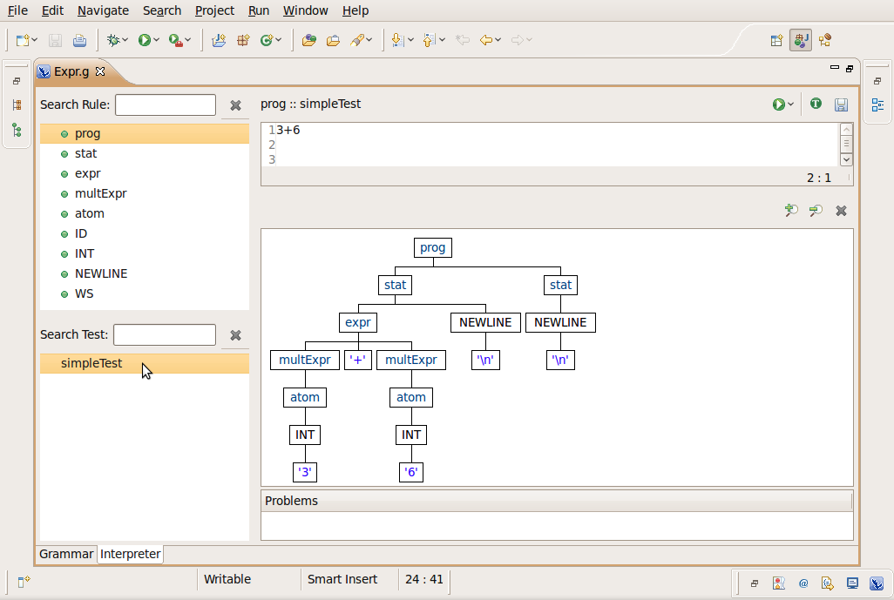
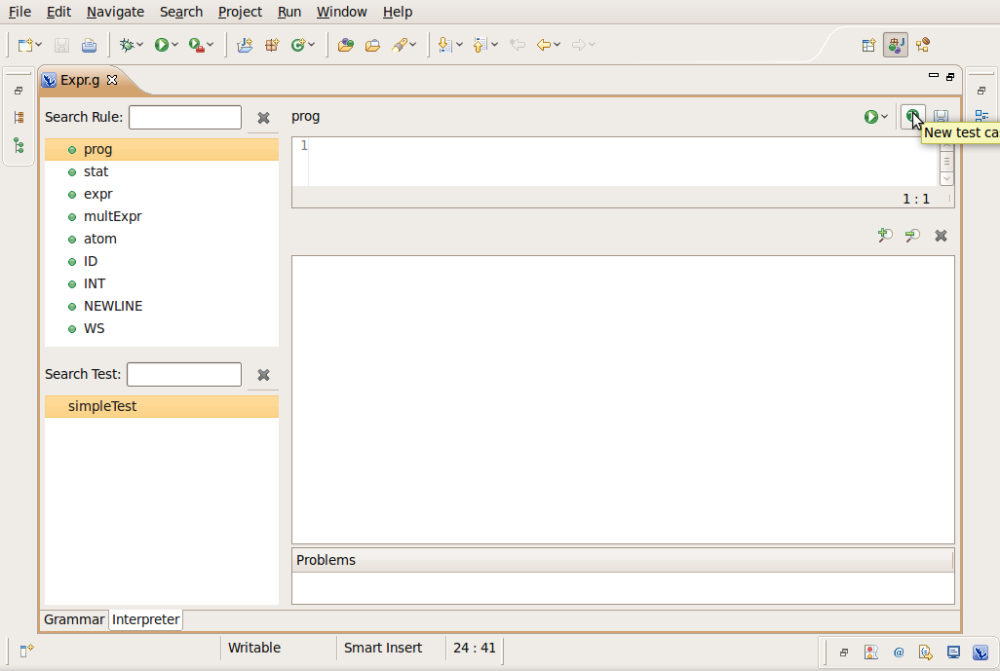
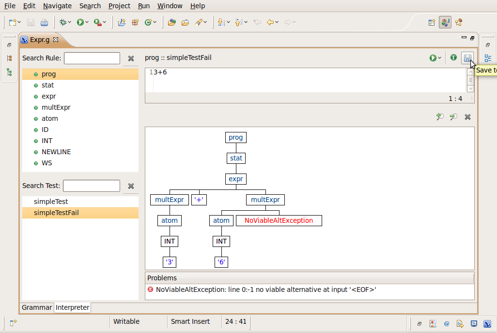

Saving test cases
In this section, you will learn how to save test cases for later
usage.
- Double click in Expr.g file to open it with the ANTLR editor
- Select the Interpreter page
- Select the "prog" rule in the Rule Panel
- In the input text type: 3 + 6 enter
- Click on the "Save" button

- In the "Name" field type: simpleTest. Click OK

The test is executed after you save it
- Now click on the "New test case" button

- In the input text type: 3 + 6
- Click on the "Save" button
- In the "Name" field type: simpleTestFail. Click OK

- The "prog" rule has two test case now